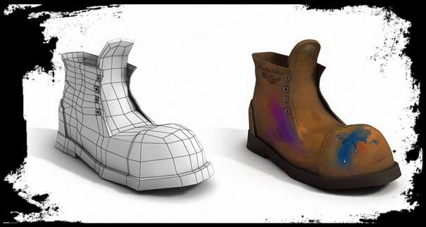

Объект
Объект в ООП — это сущность, способная сохранять свое состояние (информацию) и обеспечивающая набор операций (поведение) для проверки и изменения этого состояния.
Объект в объектно-ориентированном программировании — это модель или абстракция реальной сущности в программной системе. Предмет моделирования при построении объекта в ООП может быть различным. Например, могут существовать следующие типы абстракции, используемые при построении объекта:
- Абстракция понятия: объект — это модель какого-то понятия предметной области;
- Абстракция действия: объект объединяет набор операций для выполнения какой-либо функции;
- Абстракция виртуальной машины: объект объединяет операции, которые используются другими, более высокими уровнями абстракции;
- Случайная абстракция: объект объединяет не связанные между собой операции.